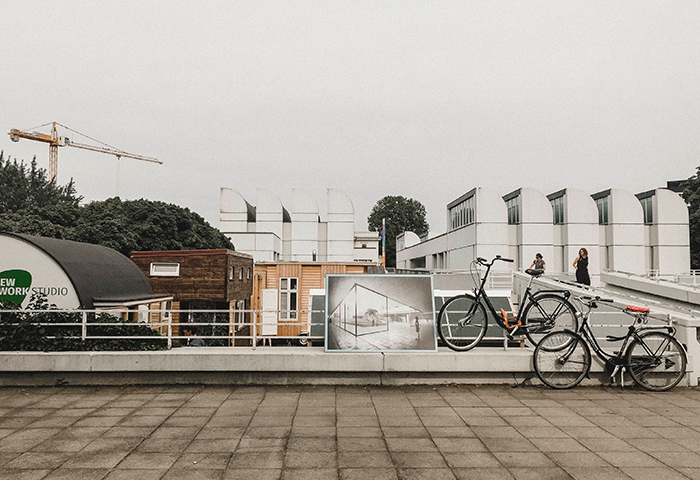

0+
Years
Experience
Working
Senior UI and Frontend Engineer, focused on UI Development, Design Systems, and Scalable Interfaces.
Design Systems
I build custom design systems tailored to unique UIs. Using the Atomic Design approach and Storybook, I develop components with all possible states.
Web Development
I develop responsive CRMs, corporate websites, e-commerce platforms, and SPAs. Clean architecture, high quality, and thoughtful UI.
React & Next.js Applications
I build scalable, fast apps using React and Next.js. Includes SSR, ISR, dynamic layouts, and optimized assets.
Creative Frontend
I bring interfaces to life with GSAP and CSS animations. Focused on detail, performance, and aesthetic precision.


I build user-first interfaces with performance, clarity, and structure in mind.
From systems to pixels, I create scalable, usable, and visually striking interfaces that perform.

-
Corporate Website
Creative. Animation. Responsive. -
Data Dashboard
Next.js. Charts. Data visualization.
Professional awards and honors I've reached.
For a long time, I collaborated with a web agency, where I have developed creative templates for various marketplaces. My work was recognized as the best on the following websites:
CSS Winner
CSS Winner Site of the Day award winning
Awwwards
Sites Of The Day on Awwwards
Webby Awards
Webby Winner, People’s Voice Winner


Testimonials
My Journal
View More PostsGSAP.js animation library. A powerful tool for creating interactive animations.
The Atomic Design concept for React/Next.js UI components + Storybook.

Contact
I live in Spain, in the city of Valencia.
Welcome to reach out and build meaningful.